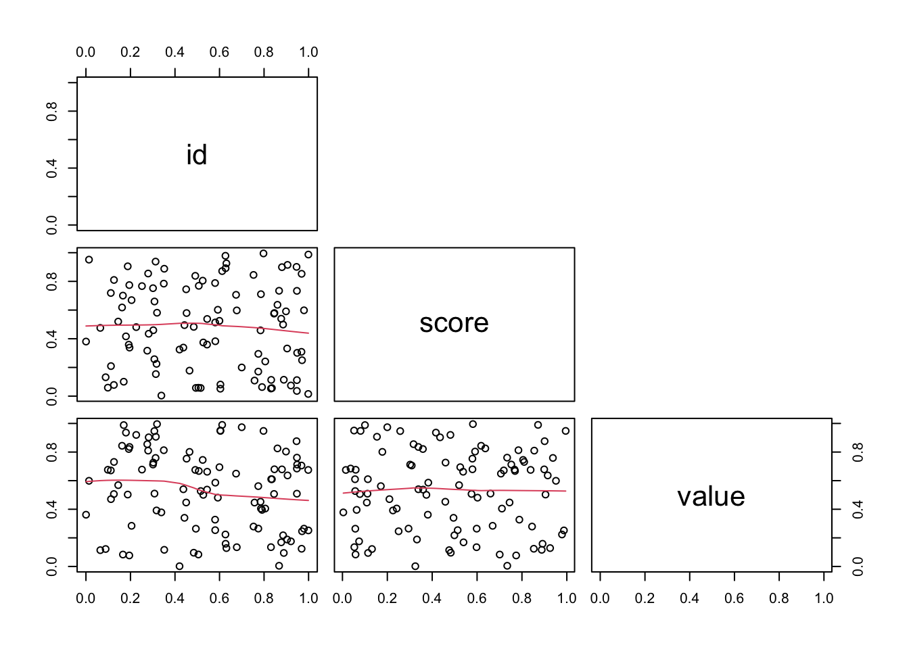
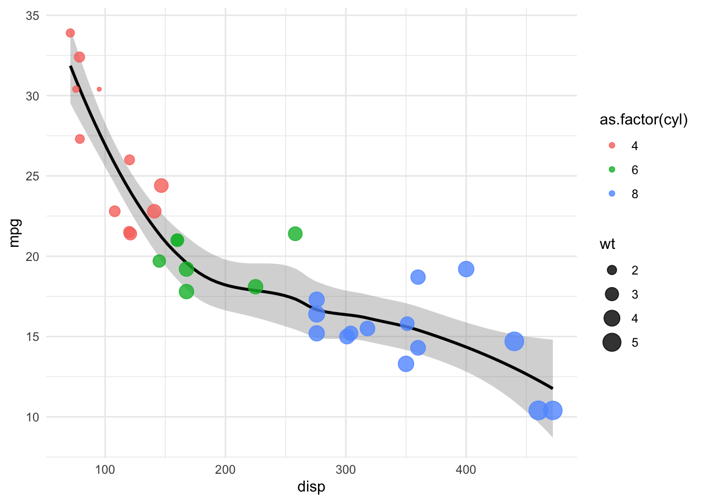

The course will give an overview of R as an instrument for programming and efficient scripting. It will start with the basics and then develop into an exploration of ways to improve code performance and structure. All of the materials from the lectures can be found here, with relevant information related to the authors as well.
Day 1
A brief history of programming
The existence of programming languages is strongly related to how computers work and how they have been developed during their history. Architecture is the base on which languages are built. Computers are built and organized in what is known as Von Neumann architecture, in this sense we have a CPU which is the main component involved in calculations. This is in turn composed of an arithmetic/logic unit a control unit and registers (MAR and MDR) on which data is kept pre-operation after it has been sourced from the memory unit (RAM). In between the memory and the CPU lies the cache (L1, L2) which hosts information that can be retrieved in a faster way than from memory.
So, what is a program? Memory and CPUs can only understand numbers, specifically bits of information, 0s and 1s and are only able to perform very simple operations, meanwhile higher-level operations are achieved by using algorithms which compound simpler operations iteratively. The first step towards translating bit instructions into alphanumeric meaningful words was the Assembly language. Assembly worked by using procedure (or routines) calling, we can think of routines as blocks of codes to execute in larger scripts. Part of this process was also involving memory management procedures, with pre-allocated memory (static) to store all global variables in a last-in first-out way and this set the initial mechanism for running programs, other parts of memory include the stack, which is the part related to local variables and programs and then a part of the memory reserved to code (or text in general), called text and finally a part known as heap which is, in line with its name, very dynamic and changes in relation to changes in need at runtime, this part of memory is the one which can be controlled by the programmer (in compiled languages usually) or by programs themselves (in interpreted languages usually) as well, here programs can be restricted in terms of usage. This was mainly engineered to avoid memory conflicts between running programs, so it became crucial to control the system and assign memory to running processes in a consistent and stable manner. This task was tackled by developing operating systems (OS).
The OS is instrumental in establishing order in resource and memory management across programs running on the same machine from the same or different users. Another step towards this is to share a machine’s CPU for time-sharing across processes running at the same time, all this is programmed within the OS, which is tasked with managing resources. In the 80s and 90s, with the advent of networking, distributed systems were created in which programs could be run on different machines by taking advantage of web-based protocols (like ssh). After the initial rise of OSs, forms of mass storage were needed in order to have a memory support built into the computer itself, this started with CDs and then hard-drives, which nowadays have been substituted in large by faster technologies such as SSDs and cloud-based solutions for storing data.
All along, expressive languages were also developed which were needed to get a more abstract sense of operations and allow for more comprehensible syntax for more complex operations like cycling and conditional execution, introduced a grammar based on data structures, types and objects. Ultimately this allows the programmer to focus on the actual program itself more than its implementation.
So summed up, the advantages of languages include: + Loops + Conditional execution + Code blocks + Operators + Data structures (specifications) + Function definition
Objects in memory are always stored sequentially and specifically, matrices and tabular data in Fortran systems (and the majority of other languages) are stored column-wise, so trying to index a matrix like A[57] == A[7,6] means that the 57th element of a matrix in memory is equal to the 7th element on the 6th column in the R object (which is 1-indexed).
index <-c(1,2,3,NA)random <-runif(100)# Try to use NA as index (should return an NA in that index position)# This highlights a fault in R's permessibility, here it does not alert the use for the sake of giving on answerrandom[index]
[1] 0.9732457 0.3155307 0.8052696 NA
In the above case we can check that R, an interpreted language, masks the user with the ability to manage an eventual error for the sake of code usability, the user then misses a chance to catch an eventual mistake in the code, maybe while generating the index above, an NA was not wanted, but R does not signal its presence while subsetting random. This mechanisms of silent coercion are widespread in R and the user should always be aware of when they can happen since they can represent a scenarion of bug generation and data loss.
Data structures and Object-oriented programming
Vectors
In R, we can have beginner data structures (i.e. vectors, matrices and dataframes) and more advanced structures (i.e. S3, S4 and RC). Simpler data structures can further be subset into homogeneous or heterogeneous data structures. Atomic vectors and lists differ due to the type of data they can contain, one is formed by elements of the same type, while lists are heterogeneous. Operations based on vectors in R are element-wise, meaning that vector-vector operations are done element by element (with the shorter vector being recycled) while scalar-vector operations broadcast the operation to each single element of a vector.
# In R, we can function the structure function to check for the structure of the data # This coerces the integerv <-c('q', 1, 'a', 2)# Look at structurestr(v)
chr [1:4] "q" "1" "a" "2"
# Additionally, we can set attributes to values for variables'a_name'<-attr(v, 'my_attribute')
Another functionally important aspect is to remind ourselves of the existance of approximations in calculations, in this case if we type the following:
x <- (sqrt(2))**2x -2# Should return 0 but it does not
[1] 4.440892e-16
This happens due to the approximation that the machine provides, and this is why we need to pay a great deal of attention when using conditionals with == 0. This is partially rescued by the use of a function like the one dplyr::near().
Hand in hand with this concept is the one of coercion, by which object get converted from their original class to other classes. This in R happens either implicitly or explicitly.
Creating sequences of numbers in R is fairly straightforward with many different functions available and we can generate both random sequences, repeated sequences or specific distributions (normal, poisson or others) by specifying the needed parameters.
# Genrate 100 random doubles from 0 to 10dbls <-runif(100, min=0, max=10)# Sample 100 values from a standard normal distributiondbls <-rnorm(100, mean=0, sd=1)# Generate 100 random outcomes from a coin flip using a Bernoullu trialdbls <-rbinom(100, size=1, prob=0.5)# Sample 100 values from a negative binomial distribution with size and prob valuesdbls <-rnbinom(100, size=1, prob=0.75)
Matrices
Two-dimensional data in R is represented by the Matrix class and can be constructed using the following code:
# Create a matrixmat <-matrix(runif(60), ncol=3)# Assign different dimensionsdim(mat) <-c(3,20) # 3 rows 20 cols# Isolate the upper triangle of the matrix in index formidxs <-upper.tri(mat, diag =FALSE)
Expanding on operations, matrix multiplication in R is achieved with the operator %*% as such:
# Create matricesx <-matrix(runif(10), ncol =5)y <-matrix(runif(5), nrow =5)# rows by col matrix multiplicationmatmul <- x %*% ymatmul
[,1]
[1,] 1.529291
[2,] 1.805237
Lists
Lists are probably the most programmatically complex objects in R, they contain different types and have different lenght with or without named elements. They represent the very first interface to Object-oriented programming.
Object-Oriented (OO) data type
Here we are moving from basic structures to objects which can contain data and are associated to methods which are able to operate on the data itself. It is a mode of operation borrowed from C++. A class contains methods and attributes, the whole creates one of the main instances of OOP. Class elements can inherit from other objects which share the same parent. The main thing to understand is that R, by default, treats everything as an object. Everything, literally everything, has attributes and maybe even methods, from basic vectors to complex classes.
vec <-c(1,2,3)# Illustrate classesclass(vec)
[1] "numeric"
# Coerce vector to another class as well, so that methods designed with that class im mind, can be applied to this object as wellclass(vec) <-append(class(vec), 'SPC')# Now vec will have both classes listedclass(vec)
[1] "numeric" "SPC"
The way we can think of classes in R is that they are description of things in a specific methods system and are defined by the setClass() function in the methods package (in S4). An object is an instance of a class, these can be created using the new() function. Finally a method is a function operating only on a certain class of objects, in this sense a generic function is one which dispatches methods, this means that they do not perform any computation, they just figure out the class of the data and matches it with an appropriate method. Generics can of course be created and a developer might create associated methods. For S3 system objects there is also a methods function which lets the user explore methods implemented for the function.
By default, R has three object oriented systems, one is S3, it implements classes without defining them strictly but instead defines functions and methods separately across classes. The main functional aspect related to S3 is the ability to overload functions, this means that one function can be swiftly applied to different class elements and behave correctly. S3 functions are by design split into generics and methods and are defined in the code by using generic.class.
# Example of an S3 defined (generic) function is printprint
function (x, ...)
UseMethod("print")
<bytecode: 0x7fb6928cbe90>
<environment: namespace:base>
# Call methods function on a generic function, in this case meanmethods('mean')
[1] mean.Date mean.default mean.difftime mean.POSIXct mean.POSIXlt
[6] mean.quosure*
see '?methods' for accessing help and source code
S3 pre-dates S4 both in terms of time and functionality, S3 methods system is less rigorous and informal, this called for a more formalized approach tackled by S4.
We can explicitly access the code behind an S3 method definition by doing the following:
head(getS3method('mean', 'default'))
1 function (x, trim = 0, na.rm = FALSE, ...)
2 {
3 if (!is.numeric(x) && !is.complex(x) && !is.logical(x)) {
4 warning("argument is not numeric or logical: returning NA")
5 return(NA_real_)
6 }
tail(getS3method('mean', 'default'))
19 lo <- floor(n * trim) + 1
20 hi <- n + 1 - lo
21 x <- sort.int(x, partial = unique(c(lo, hi)))[lo:hi]
22 }
23 .Internal(mean(x))
24 }
This shows the inner functionality of the S3 method behind mean. Interestingly, the .Internal at the very end is used to fetch C code which adds functionality to the method.
S4 formally defines classes, while RC (reference class) binds also the methods and has a very similar approach to classes in C++. In the below code we can see how, differently from S3, an S4 method does not have ellipses in the standardGeneric function since it takes on standardized input invariably.
# Print out an S4 functionshow
standardGeneric for "show" defined from package "methods"
function (object)
standardGeneric("show")
<bytecode: 0x7fb6944a4bc8>
<environment: 0x7fb693892f60>
Methods may be defined for arguments: object
Use showMethods("show") for currently available ones.
(This generic function excludes non-simple inheritance; see ?setIs)
Classes in R can be defined using the structure() function by doing something like foo <- structure(list(), class = 'my_class') and then from there we can start building methods for the class by specifying functions operating on the structure. A hierarchy of sorts can be visualized as follows, first we have a class, then in S3 methods are below functions, which in turn are separated from the class specification (like class and attributes in python). RC style objects are the ones closer to the object-oriented programming way of C++, here methods and attributes are packaged within the class.
Now, as an example, we will define a simple S4 class for describing a bank account.
# Define the S4 class with slotssetClass('bank_account',representation('user'='character','balance'='numeric'))
In this way, we are able to access the slots of the class with the @ operator, which is specifically reserved to access S4 class slots. Let’s now create a new method which allows the updating of the class object after a money deposit.
# A method to update a class setGeneric('sum')
[1] "sum"
setMethod('sum', # specify a generic function 'bank_account', # signaturefunction(x, deposit) { x@balance <- x@balance + deposit })# If we call methods on print we should see the new method as wellshowMethods('sum')
Function: sum (package base)
x="bank_account"
Now let’s try the new class in action and apply the defined method to an object!
# Create a new bank account with user and balanceba <-new('bank_account', user ='Mattia', balance =100)# Add a deposit (if this was a Ref Class then updates could happen inplace)ba@balance <-sum(ba, 200)# Print out new valueba@balance
[1] 300
I/O - Working with files
In R, we are able to work with files by interacting with the host OS and filesystem. The function read.table() is a built-in which helps the user to read files. In addition, by using write.table() we can save a table object with a specified name and separator. R also provides a specific function to dump() a whole environment image into a variable which can be save, although this is highly inefficient.
Additionally the tidyverse, through readr, provides a faster interface to achieve the same I/O management.
An interesting binary file format to save objects in R but which can be read by any other programming languages is the one provided by the feather library.
Day 2
Parallel Programming
When programmming something using interpreted (vs compiled, i.e. C++) languages like R, primarily thought as interactive, it is important to stop and understand how functions work in terms of operations and I/O instead of just getting into the thick of it and start using up resources. This is primarily concerning memory requirements when working on a shared platform as well as actual CPU resources. Dynamic vs Static libraries. To provide an example of the performance that can be obtained by programming in compiled languages, let’s imagine a scenario by which we have a series of DNA sequences and we want to get all of the 3-base kmers which are present in each sequence. One relatively straightforward way would be to first generate an empty sequence by kmer matrix and then, after having determined all the possible kmers in the sequences (a dictionary), start counting and indexing any occurrence into the appropriate position. Although this works well with short sequences, the advantages which come from the conjunction of binary encoding and the use of C++ which allows the direct accession of space on memory grant amazing advantages. Brush-up on the definition of a core and a thread? But another way to brute-force achieving speed is to use more cores and threads! In order to take advantage of the presence of multiple cores, we can run different processes by sizing the data into smaller chunks (easier, less efficient) or make a program multithread, this is the best way possible but also the most expensive in terms of implementation time. By multithreading we split up the instructions of a program into spawning different children processes. Parallelization comes with a few challenges, including timing and managing execution I/O across child processes. There are cases in which data needs to be modified by different processes thus we need to ensure that we are not compromising the outputs and/or mixing information from different processes.
Graphics Processing Units
GPUs work very well for linear algebra calculations, especially linear algebra concepts and operations. GPUs are very “dumb” compare to CPUs in terms of the kinds of operations and the complexity of operations that they can do, but what they were initially designed to do (rendering graphics, therefore large matrices) proved also very powerful when applied to operations involving matrices. These cards have a very different architecture as opposed to the Von Neumann one seen previosuly, they contain many more threads doing the same operation on the same data, which needs, crucially, to be copied on the CPU itself, which will also store the final object after computation which will need to be re-imported into memory.
OOP History and Paradigms
Programming has taken up many shapes during its history, we can have unstructured programming which then evolved into procedural programming by definig re-usable functions which otherwise need repetition. The next step in complexity is represented by modular programming, by which modules of code are utilized and interconnect to provide functionality across different files. The final step is represented by the object-oriented paradigm, by which objects are identified by a set of methods coupled with the needed data, which in turn is strictly related to the methods. Let’s imagine that we want to create a new genomics object in which to store genomic data, this object can be as general as possible, with specific properties and methods. The former might contain IDs from different classification systems, the annotation and the organism of origin while the latter might instead contain actions which can be performed on the object such as alignment, changes in bases or calculation of GC content etc… In contrast to procedural programming, the program flow in OOP is said to be “message oriented”, by this meaning that the user talks to objects by sending messages through methods. The interesting part of OOP is that classes are not just created to be on their own, instead relationships between objects is desirable as a distinguished feature, for example an object representing a transcript can be part of an object representing a chromosome and can inherit actions which can be performed on other elements from the chromosome object, for example determining start and end locations, which could also be use for a genomic sequence, which in turn can be another class under the chromosome one. Methods defined in a parent class are re-implemented in the daughter classes, in this way in the code we can always call the same method and the correct implementation will always be selected since it is specified in the appropriate class, this is called polymorphism.
Data Manipulation and Transformations
Base R functions for manipulating basic data structures. One of the most potent family of functions in R is the *apply one. In this case we can iterate over elements of a list or columns of a dataframe iteratively by applying a custom function without the need to declare it explicitly outside.
# Use apply over a listl =list( 1:5 , c("a","b") , c(T,F,T,T) )# apply length to the list elementslapply(l, length)
[[1]]
[1] 5
[[2]]
[1] 2
[[3]]
[1] 4
Then we can operate over dataframe numerical columns extracting correlation values like the following, using the function pairs().
## quick graphical overview by the scatterplot matrixd <-data.frame('id'=runif(100), 'score'=runif(100), 'value'=runif(100))pairs(d[,c("id", "score","value")] , lower.panel = panel.smooth , upper.panel =NULL)

Operations on numerical 2D data like matrices can be operated upon by using a couple of very powerful functions like scale() and sweep().
# Showcase the functions abovem =matrix(round(runif(9),2),nr=3,nc=3) # Scale (mean 0 and variance 1)scale(m, center =TRUE, scale =TRUE)
# Sweep (apply a vector over a matrix summarizing an operation)# median value of each row of the matixrow.med <-apply(m, MARGIN =1, FUN = median)# subtracting the median value of each rowsweep(m, MARGIN =1, STATS = row.med, FUN ="-")
Of course the functionality of many of these functions has been superseded and augmented by the ones provided by the dplyr package, at least in terms of operating over dataframes.
Day 3
Code optimization and performance testing in R
Functions in R map a repetitive behaviour onto an input and generate a return value. In R, .Primitive is used to call a function from the underlying C language. In functions, scoping refers to how a value is assigned to an environment variable, this will test whether the variable already exists or not and whether the variable exists in a parent or child environment. Scoping is divided in both static and dynamic. In static scoping we can have four basic principles including name masking, by which if a name is not defined inside a function, R will look for it in the parent environment. Another feature is dynamic lookup, by which we can have multiple assignments to the same value along the code.
x <-1y <-3# Demonstrate name maskingfun <-function(){ x * y }fun()
[1] 3
# Demonstrate dynamic look-updl <-function(){ x <- x +1}# first valuex <-0dl()# second valuex <-2dl()
In the case we end up calling a variable inside a function which does not exists, R will throw an error since it cannot find the variable anywhere in the function or in the parent environment. We can check the existance of variables by using exist(). While defining a function we can check the existance of specific argument using the missing() function inside a function in a conditional which also includes the stopping of the function in case of positive status with stop(). This concept extends to condition handling and recovery with the try() and catch() couple of commands. Additionally, by using tryCatch() we can extend this behaviour further by encapsulating both command, warning and error in the same function which will decide between warning or error.
# tryCatch demonstration
In R, there are a few functions which help with debugging functions, we can set a debug() function working in order to check the status of a function. Additionally one can use browse() and traceback() to check whether the function is doing the correct thing.
Also, one can check for function performance and benchmarking with specific libraries in R like rbenchmark::benchmark(). Calling this function, we can manage the avergae execution time and get data from the execution of more than one function altogether.
Optimizing code to make it faster is an iterative process which essentially entails three steps including finding the bottleneck, trying to eliminate it or substitute it and then repeat the process until the code is “fast enough”. These steps are facilitated by profiling the code, some demonstration is present below.
# Code profiling
The main thing is to understand how R handles every calculation, this procedure is known as profiling can be achieved in R by different means and packages. We can demonstrate this by applying this workflow to a linear regression setting.
# Linear regression code profiling
Bioconductor for biological data in R
Bioconductor was initially created with the idea in mind to generate an open-source place based on the R programming language on which to store packages and projects for the analysis of genomics data. Given the nature of Bioconductor, it encourages contributions and learning through massive documentation bundled with every package. Bioconductor packages are focused on deploying many different functionalities spanning from data visualization for genomics to differential expression analysis, all of this coupled with the added learning bonuses coming from the release of vignettes. Some of the most used packages in Bioconductor used for genome arithmetics include IRanges and GenomicRanges. Since the genome is a linear one-dimensional coordinate system, we can perform different kinds of operations related for instance to overlaps. For example in the former package, we can define a set of three ranges by using the following code:
Most of the provided operations above are recalling ones already existant in C-based packages like bedtools.
Another way of visualizing genomics elements is through strings, after all DNA sequences are just sets of letters. A useful suite of commands is the one provided by the package Biostrings. This provides a multitude of functions that provide the ability to generate for instance reverse complements of the original sequence. This for instance is useful since in FASTA format files, the genes are always present with their forward strand and therefore we might need the reverse complement if the gene is antisense. This capability is achieved with the DNAString class and its associated methods.
Bioconductor already contains many packages which gather genetic information for many model organisms, one of them is BSgenome while others live within the .org family of packages.
Day 4
The packaging system in R
Packages in R are installed by using either CRAN or other public package repositories like Bioconductor as we have seen yesterday. R uses both a system-wide access library (admin privileges needed) and a personal library living in the home directory of the user (usually located at /usr/local/bin/R). The tendency is to use only source code within libraries without relaying on third-party code in order to keep everything contained and requiring only compilation of its own source code. RStudio is an IDE completely based and dependant on R which allows developers to start a fresh project from a template directory system. In this case we can set a project name and already select eventually present source files from which to start building. Additionally, all code can be promptly synced with an existing or a new git repository to provide efficient tracking of code changes. The same can be achieved in CLI by running package.skeleton(). Some source of help useful to understand how to build R packages include the official R documentation and Karl Brockman’s Primer (also contains many other interesting tutorials and primers for C++). In order to automate building effective documentation (which resided in a .Rd file for each function contained in the man directory) and function annotation, which can become a really painful process, we can rely on the Roxygen2 which takes specific annotations in the source code and turns them into function documents respecting the format needed by R. An example of a function with proper Roxygen2 annotations is the following:
# Illustration of Roxygen2 docs#' A simple and useless function#' #' This function is just here to print stuff out and demonstrate the use of \code{roxygen}. #' Use "@param" to list the paramters of the function with descriptions. #' Use "@return" to describe the return values of the function. #' Use "@export" to export the function in namespace or do not use it if the function is supposed to remain of internal use. #' #' @param x whatever you want to print out.#' #' @return None#' #' @exportmy_fun <-function(x, ...){print(x, ...)}
Another important part of R packages is the NAMESPACE, which contains instructions on how to export functions when loading a package. This file will also be generated by Roxygen2 when needed, and the tool will automatically export only the right and needed namespaces (function names). Another useful feature that a developer can use while creating a package is the insertion of data as well. This data can be used for testing or use as available datasets for showcasing the package functionalities. This can also be really useful in the case of static files which are sourced from functions within the package. This documenting of data can also be handled by Roxygen2 through the creation of another .Rd file. In the data definition we can provide a @docType data and a @usage data to refer to the fact that is data and the way to source it using a function.
# Here's a way to generate some data and store it into a file so that it can be source by a function in the package# This code should be saved as any other source code, and with the annotations it will generate automatically a .Rd file with documentation#' Random data loaded inside a package#' #' @docType data#' #' @usage data(random_matrix)random_matrix <-matrix(runif(100), ncol=10)
The above matrix will then be loaded and included in the worskpace after the package has been loaded and can be called using random_matrix as a variable, the same way that mt_cars is sourced from ggplot’s default datasets.
Genomics data visualization
One of the main uses for data visualization is to perform exploratory data analysis (EDA). The basic library in R for creating customisable and clear visualization is ggplot. This package is inserted within a rich environment of data manipulation tools and visualization called tidyverse. The fundamental idea related to data visualization is to communicate a story using the data at our disposal. Relationships hidden in data stand out with proper visualization techniques and ideas. That’s the thing, it’s not only about dull application but also about creativity and storytelling. This phenomenon is especially relevant while working with huge datasets where relationships can exist in many directions and between many variables at once, and where each variable might be represented by thousands or millions of observations. This is exactly the case for genomic data sets describing relevant biological information.
# Generative art with R example with folded code?
In its basic functionality, ggplot exploits what is known as “the grammar of graphics”, gg. This consists of a layered mechanism of instructions. We start by defining which variables of interest are to map to which plot characteristic between color, fill, shape and size. This happens by using the aes() function within either a direct ggplot call or within geoms. geoms are used to define what kind of plot to use, and this of course is going to depend on which variable relationships we want to highlight. One of the paradigms of plotting data is the variable-chart type relationship. By this we mean the right coupling between chart type and appropriate variable nature to plot (i.e. continous vs discrete).
These are the main relationships to take into account when plotting: + One variabel, continous: histogram, density curve (distributions) + One variable, discrete: bar chart, pie chart (proportions) + Two variables, continuous: scatter plot, 2D density kernels (distributions) + Two variables, discrete: confusion matrices, heatmaps (common occurence) + Two variables, one continuous and one categorical: box plot, violin plot (distributions)
This, in practice, for a minimal plot between two continuous variables:
library(ggplot2)data <- mtcars# Plot the relationship between a car displacement and mpg, colored by number of cylinders and give a dot size related to the car's weight# From this it appears clear how heavier cars have bigger engines, consume more and have more cylinders.ggplot(data, aes(x = disp, y = mpg, col =as.factor(cyl))) +geom_smooth(color='black') +geom_point(aes(size = wt), alpha=0.8) +theme_minimal()

Obviously there exist many extensions which add functionality to the basic package. For example we can plot maps with map_data (or leaflet widgets) or alluvial diagrams (a subset of Sankey diagrams) with ggalluvial. Another useful package when studying clonal evolution (in tumors particularly) is fishplot, which creates publication-ready plots.
Plotting heatmaps
Heatmaps are visual representations of tabular data. One of the most used packages to create heatmaps is pheatmap and its more personalizable counterpart complexHeatmap.